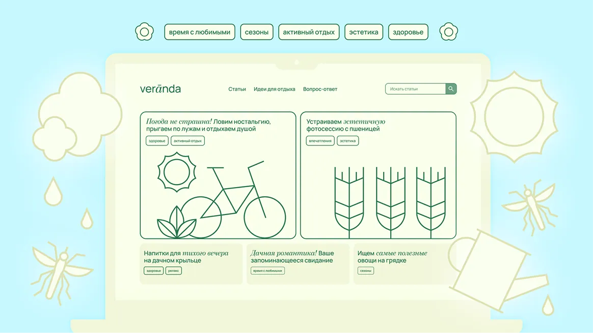

Eng

WEB
Veranda
A media site about modern country living. The lead text is not written yet.
| Period | 2026 |
| Project | Placeholder |
| My role | UX-UI |
| Team | 1 designer |
Context
This block is not written yet. It will tell where the project came from and why it is being made now.
Problem
This block is not written yet. It will describe the task the project started from.
Goals
- First goal — placeholder.
- Second goal — placeholder.
- Third goal — placeholder.
Process
This block is not written yet. It will show the work from first sketches to the finished site.
Result
This block is not written yet. It will show what came out of it and how that is measured.